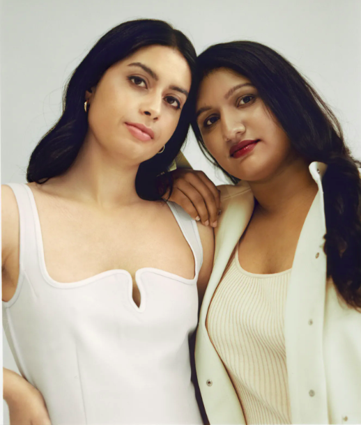

Te Kahukura Boynton owner of Maori Millionire has a blog and
podcasts where she teaches various financial literacy topics
like investing, personal finance and self development.
Frances Cook tells her personal story about reaching financial
independence right from the start when she was a "financial mess".
The messages and lessons in this book are so empowering and proves
anyone can reach financial independence no matter what
the starting point is.

Sim & Sonya founded this amazing educational podcast that educates
people on all things investing. Their podcast is an awesome
resource especially if investing is something you are interestd
in.